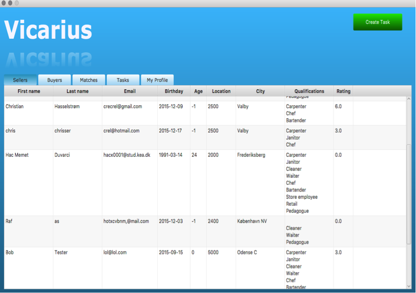

Java

Java har været hovedfaget på mit studie og må derfor sige at have en solid grundforståelse for at kunne udvikle i Java. Jeg har efterhånden udviklet alverden i Java, og mange projekter hvor jeg har brugt en database (MySQL).
Vicarius
Vicarius er et program som jeg udviklede sammen med to studiekammerater fra mit studie som et afsluttende erhvervsprojekt. Programmet er et vikarbureau, som har to typer kunder - virksomheder, og privatpersoner. I programmet defineres virksomhederne som ‘buyers’ og privatpersoner som ‘sellers’. ‘Buyers’ tilbyder et vikararbejde, og sætter et krav til hvilke kvalifikationer dette arbejde kræver. ‘Sellers’ har tilføjet hvilke kvalifikationer de besidder i forhold til at arbejde. Hvis en virksomhed har udbudt et arbejde, med et specifikt krav til kvalifikationer, og en privatperson besidder disse, vil de matche.Herefter kan begge parter ansøge hinanden om at arbejde sammen. Efter samarbejdet ophører kan virksomheden og privatpersonen anmelde(‘rate’) hinanden, i forhold til hvor anbefalelsesværdige de synes hinanden er.
Se GitHub repository her.
